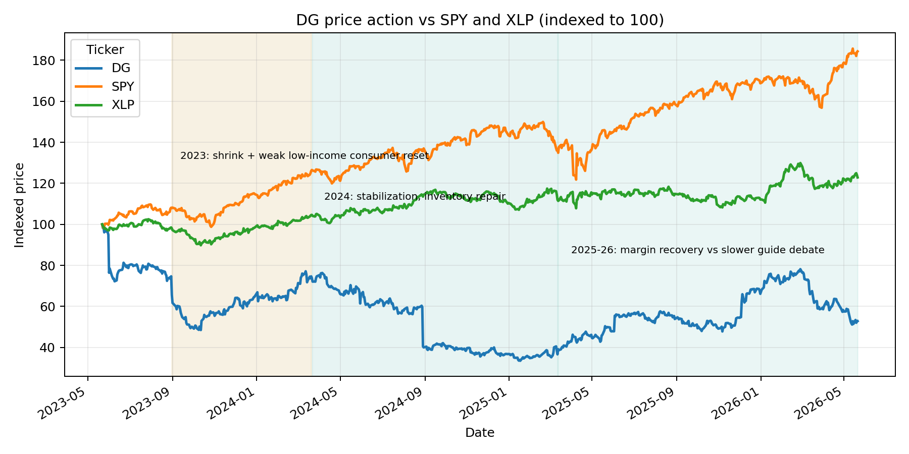
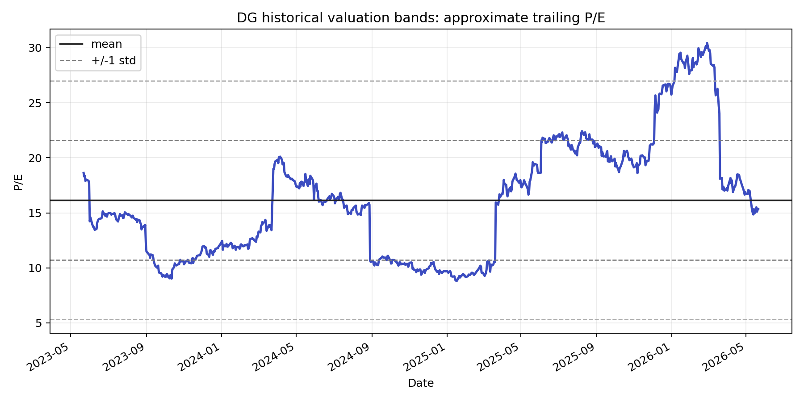
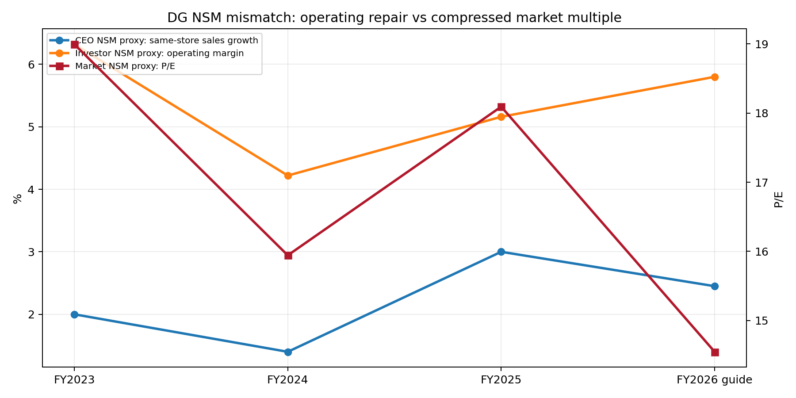

Ticker: DG
Date: 2026-05-22
Classification: Watchlist / Repair Story
结论：DG 值得放入观察名单，但暂不建议进入下一阶段深研。核心原因不是业务没有改善，而是当前市场锚并不明显错误：股价约 $105，对应管理层 FY2026 EPS 指引中点约 14.5x，OpenBB/YFinance forward P/E 约 13.2x，和 DLTR、TGT 这类零售修复/中低增长同业相近。市场已经在用“EPS 与经营利润率修复”的框架给价，而这正是 DG 最可验证的改善路径。
更有价值的争论是：DG 是否正在从“低收入消费者承压 + shrink + 库存混乱”的价值陷阱叙事，切回“高现金转化的小店网络 + 毛利自救 + 数字/媒体网络增量利润池”的正常化叙事。证据链支持经营修复正在发生：FY2025 同店销售 +3.0%，Q4 同店 +4.3%，FY2025 毛利率扩张 107bp，经营现金流 $3.6bn，FCF 约 $2.4bn。但从 SitRep 晋级标准看，尚未满足“明显错误锚 + 足够大上行 + 外部独立验证”三项条件。
| Item | Latest Situation |
|---|---|
| 市场数据 | 截至 2026-05-22 数据快照，DG 股价约 $105.11，市值约 $23.1bn，EV 约 $37.7bn，52 周区间 $95.11-$158.23。股价 3 年约 -50%，当前仍低于 50 日和 200 日均线。 |
| 最新财务状态 | FY2025 收入 $42.7bn，同比 +5.2%；同店 +3.0%；经营利润率 5.16%，较 FY2024 的 4.22% 修复 94bp；FY2025 EPS $6.85。FY2026 管理层指引：净销售 +3.7% 至 +4.2%，同店 +2.2% 至 +2.7%，EPS $7.10 至 $7.35。 |
| 价格行为与技术面 | 近 30 个交易日从约 $116 附近跌至 $105，RSI 在 30 多区间，MACD 仍为负但柱状图收敛。技术面显示超卖后的企稳尝试，但趋势尚未确认反转。 |
| 资料覆盖 | 已执行新闻、Podwise、卖方、技术指标、电话会、SEC、买方七条信息流。限制：本地新闻库未找到 DG 直接新闻；买方/运营者长文库命中质量差；卖方只找到一篇 GS 直接相关快评。 |
| 关键指标 | 数值 | 含义 |
|---|---|---|
| FY2025 同店销售 | +3.0% | 恢复到可投资区间，且来自客流 +1.6% 与客单 +1.4%，不是单纯价格通胀。 |
| FY2025 毛利率 | 30.66% | 同比 +107bp，管理层称 shrink 改善贡献显著；这是短期 EPS 修复的核心。 |
| FY2025 FCF | 约 $2.4bn | 相对当前市值约 10% FCF yield，说明“现金流正常化”比 GAAP 利润更有吸引力。 |
| 门店与覆盖 | 约 20,959 店 | DG 仍是美国最大折扣零售商之一；问题在成熟店效率，而不是缺少规模。 |
市场定价锚：DG 当前主要按 EPS / P/E 与经营利润率修复定价，而不是按门店数、收入规模或“防御性消费”稀缺性定价。GS 直接相关快评使用相对 P/E 风险收益框架，给出 Buy 与 $116 目标价，但该目标价相对当时价格上行有限；这说明即使看多卖方也没有给出显著重估叙事。
嵌入预期：当前价格大致反映 FY2026 EPS $7.10-$7.35 能达成、毛利继续小幅改善、但同店增长从 Q4 高点回落到 2% 中段。若 3-4 年经营利润率能接近管理层 6%-7% 框架，EPS 可继续修复；但市场已经在给 13-15x P/E，重估空间主要来自盈利上修，而非估值倍数大幅扩张。
| Company | Market Cap | P/E | Fwd P/E | Rev Growth | Op Margin |
|---|---|---|---|---|---|
| DG | $23.1B | 15.3x | 13.2x | 5.9% | 6.1% |
| DLTR | $18.6B | 16.1x | 13.0x | 9.0% | 13.5% |
| TGT | $57.3B | 16.7x | 14.2x | 6.7% | 4.5% |
| WMT | $967.2B | 42.7x | 36.8x | 7.3% | 4.3% |
| OLLI | $5.0B | 21.4x | 16.3x | 16.8% | 14.0% |
三张图：价格与叙事、估值带、NSM mismatch 均使用公开市场数据和公司披露代理指标构建。估值图使用股价除以最近可得 TTM EPS 的近似 P/E，不等同于精确 NTM consensus P/E。



| Lens | Assessment |
|---|---|
| CEO NSM | “省钱 + 便利”的可见交付，最接近的可披露代理是同店销售、客流、Value Valley / $1 商品表现、in-stock 与门店体验指标。 |
| 长期投资者 NSM | 成熟店单位经济与现金转化：经营利润率、库存周转、FCF、可持续门店回报。核心不是多开店，而是现有网络恢复到 6%-7% 经营利润率框架。 |
| 市场共识 NSM | FY2026 EPS 与 P/E。市场惩罚的是“低收入消费者压力下，毛利改善是否可持续”，奖励的是 EPS 上修与现金流恢复。 |
| Mismatch category | 轻度“健康滞后”，但不是足够强的结构性错价。经营 NSM 已改善，市场倍数却被压缩；不过 P/E 框架本身合理，缺的是更大上修证据。 |
低价与近场便利 → 更高到店频次 / 配送频次 → 成熟店同店销售与非消耗品渗透恢复 → shrink、损耗、库存与门店劳效改善 → 毛利率和经营利润率修复 → FCF、去杠杆、2027 后潜在回购
上行/下行不对称：若 DG 达到 FY2029 20% 非消耗品渗透、经营利润率接近 6.5%，并恢复回购，EPS 可能向 $9-$10 迈进；15x 对应 $135-$150，叠加股息是有意义但不是压倒性的上行。若同店跌回 0%-1%、shrink 改善停止、工资/维修/配送成本吃掉毛利，市场可能把 DG 拉回 11-12x $6-$7 EPS，即 $66-$84 区间。当前不对称性不足以直接晋级。
Classification: Watchlist / Repair Story.
Wrong anchor：不充分。市场当前锚是 EPS、同店销售和经营利润率，而 DG 的投资争论也确实应围绕这些指标展开。可能的错价只在于市场低估了 shrink、库存、非消耗品与 DG Media Network 的持续性，但这属于“斜率判断”，不是框架错误。
Material upside：中等。FCF yield 很有吸引力，经营修复若持续会带来 EPS 上修和回购重启，但在 13-15x P/E 的当前价格上，上行更多像正常化收益，而不是组合层面必须优先配置的显著错价。
Clear validation path：充分。接下来 2-4 个季度可以用同店客流、毛利率、shrink / damages、库存增速低于销售增速、非消耗品渗透和 delivery / DG Media Network 贡献来验证。但由于前两项不够强，本次结论是不晋级，继续观察。
Confirming datapoints
Breaking datapoints
../collected_resources/DG_FY2025-Q4_earnings_call_transcript.md../collected_resources/DG_FY2025-Q3_earnings_call_transcript.md../collected_resources/dg_sec_extraction.md../collected_resources/dg_sec_latest_filings.json../collected_resources/GS_DollarGeneral_DGUS_Q2_preannounce_20260522.md../collected_resources/podwise_dg_ask_sources.md../collected_resources/20260522_freshrss_search_notes_DG.md, ../collected_resources/20260521_CNBC_walmart_q1_earnings_preview_trade_down_proxy_for_DG.md../collected_resources/dg_technical_30d.csv../collected_resources/dg_market_snapshot_yfinance.json, ../collected_resources/dg_peer_market_snapshot_yfinance.csv, ../collected_resources/dg_spy_xlp_3y_prices.csv../temp/buy_side_log_dg_*.jsonl